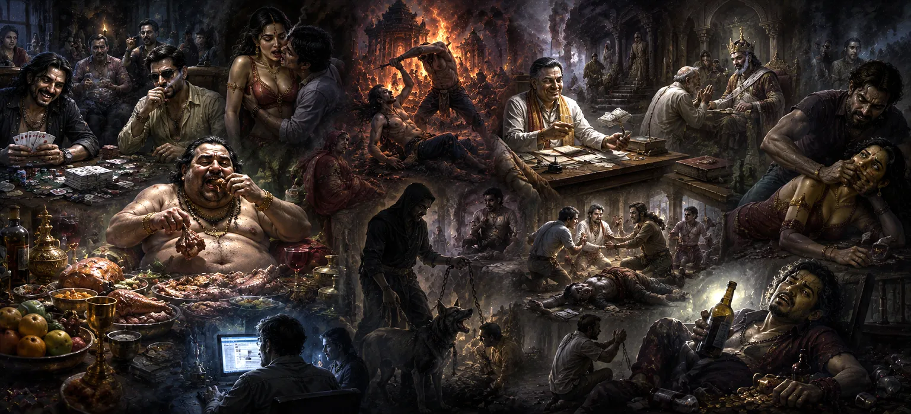

पाप के विभिन्न प्रकार
अध्याय 5 में प्रमुख पापों और कर्म परिणामों के अवलोकन के बाद, अध्याय 6 अपराधों का एक व्यापक वर्गीकरण प्रदान करता है। यह पापपूर्ण कार्यों को इस आधार पर अलग-अलग क्षेत्रों में वर्गीकृत करता है कि मनुष्य दुनिया के साथ कैसे जुड़ता है: मन, वाणी और शरीर के माध्यम से।
पाठ दर्शाता है कि पाप केवल हिंसा या चोरी के शारीरिक कृत्यों तक ही सीमित नहीं है। अनकहा द्वेष, सूक्ष्म ईर्ष्या, धोखेबाज शब्द और कठोर वाणी शारीरिक गलत कार्यों की तरह ही शक्तिशाली नकारात्मक कर्म बीज पैदा करते हैं।
अपराधों के पूरे स्पेक्ट्रम को समझकर, एक साधक कर्म के तीनों उपकरणों- मन, वाणी और शरीर में पूर्ण शुद्धता बनाए रखने के लिए आवश्यक आत्म-जागरूकता प्राप्त करता है।
अध्याय 6 की मुख्य बातें
मानसिक पाप (मनसा)
बुरे विचारों, ईर्ष्या, द्वेष और अधर्मी मानसिक इरादों की जाँच करता है।
स्वर पाप (वाचिका)
कठोर शब्द, झूठ, बदनामी और हानिकारक गपशप का विवरण।
शारीरिक पाप (कायिका)
हानिकारक शारीरिक गतिविधियों, चोरी, हिंसा और संवेदी दुरुपयोग की रूपरेखा।
गंभीरता की डिग्री
जानबूझकर की गई दुर्भावना और अनजाने में की गई गलतियों के बीच अंतर करता है।
सफाई के तरीके
प्रत्येक प्रकार के अपराध को शुद्ध करने के लिए व्यावहारिक मार्गदर्शन प्रदान करता है।
मृत्युपरांत जीवन का प्रवेश द्वार
साधक को अध्याय 7 के यमलोक के अध्ययन के लिए तैयार करता है।
इस अध्याय में मुख्य विषय
- 01 पापों का त्रि-गुना वर्गीकरण →
- 02 मानसिक पापों का स्वरूप (मनसा कर्म) →
- 03 वाणी के पाप (वाचिका कर्म) →
- 04 शारीरिक अपराध (कायिका कर्म) →
- 05 इरादे और सचेत जागरूकता की भूमिका →
- 06 लघु पाप (उपपातक) और द्वितीयक त्रुटियाँ →
- 07 मन, वाणी और शरीर के लिए अनुकूलित शुद्धि →
- 08 पाप संचय को रोकने के लिए इंद्रियों की रक्षा करना →
- 09 परम कवच के रूप में शिव भक्ति →
- 10 यम की यात्रा में परिवर्तन →
पापों का त्रि-गुना वर्गीकरण
अध्याय 6 मानव कर्म के मूलभूत त्रय का परिचय देता है: मन (मानस), वाणी (वाक), और शरीर (काया)। प्रत्येक मानवीय अनुभव और अंतःक्रिया इन तीन मार्गों में से एक या इनके संयोजन से उत्पन्न होती है।
धर्मग्रंथ इस बात पर प्रकाश डालता है कि नैतिक अखंडता पूर्ण नहीं है यदि कोई व्यक्ति भौतिक शरीर को नियंत्रित करता है जबकि मन को दुर्भावनापूर्ण विचारों में भटकने देता है या जीभ को हानिकारक झूठ बोलने देता है।
सच्चे आध्यात्मिक अनुशासन के लिए विचार, वाणी और शारीरिक कर्म में एक साथ सामंजस्य और शुद्धता की आवश्यकता होती है।
मानसिक पापों का स्वरूप (मनसा कर्म)
मानसिक पाप सूक्ष्म होते हुए भी गहरे शक्तिशाली होते हैं। इनमें दूसरों की सफलता के प्रति ईर्ष्या रखना, नुकसान की साजिश रचना, दूसरे की संपत्ति का लालच करना और ईश्वरीय सत्य में संदेहपूर्ण अविश्वास को बढ़ावा देना शामिल है।
चूँकि मानसिक विचार बाहरी अवलोकन से छिपे होते हैं, इसलिए लोग अक्सर उन्हें खारिज कर देते हैं। हालाँकि, विचार सूक्ष्म मानसिक वातावरण का निर्माण करते हैं और धीरे-धीरे भौतिक विकल्पों में प्रकट होते हैं।
मानसिक क्षेत्र को शुद्ध करने के लिए निरंतर आत्म-निरीक्षण, ध्यान और सभी प्राणियों के लिए बुरे विचारों को सद्भावना से बदलने की आवश्यकता होती है।
वाणी के पाप (वाचिका कर्म)
जीभ एक शक्तिशाली उपकरण है जो ठीक भी कर सकती है और नष्ट भी कर सकती है। मौखिक पापों में जानबूझकर झूठ बोलना, बदनामी फैलाना, कठोर शब्द बोलना और बेकार, विषाक्त गपशप में शामिल होना शामिल है।
शब्द दूसरों के दिलों पर गहरी छाप छोड़ते हैं और वक्ता तक तत्काल कर्म की प्रतिध्वनि उत्पन्न करते हैं। एक भी कठोर सजा दशकों की सद्भावना को नष्ट कर सकती है।
पुराण वाक् अनुशासन (वाक तप) के अभ्यास की वकालत करता है - केवल वही बोलना जो सत्य, सुखद और लाभकारी हो।
शारीरिक अपराध (कायिका कर्म)
भौतिक पापों में भौतिक शरीर का उपयोग करके किए गए स्थूल कार्य शामिल होते हैं। इनमें हिंसा, जीवित प्राणियों को नुकसान पहुंचाना, संपत्ति की चोरी, व्यभिचार और भौतिक पदार्थों का दुरुपयोग शामिल है।
ये क्रियाएं सीधे तौर पर ब्रह्मांडीय व्यवस्था को बिगाड़ती हैं और समाज को तत्काल नुकसान पहुंचाती हैं। परिणामस्वरूप, वे इस जीवन और मरणोपरांत क्षेत्र दोनों में भारी कार्मिक प्रतिक्रियाएँ प्राप्त करते हैं।
नैतिक अनुशासन (यम और नियम) के माध्यम से शारीरिक क्रिया को नियंत्रित करना आत्म-निपुणता की दिशा में पहला महत्वपूर्ण कदम है।
इरादे और सचेत जागरूकता की भूमिका
अध्याय 6 स्पष्ट करता है कि किसी कार्य का कार्मिक भार इरादे (संकल्प) से बहुत अधिक निर्धारित होता है। एक आकस्मिक गलती का परिणाम पूर्व-निर्धारित दुर्भावनापूर्ण कार्य की तुलना में कहीं अधिक हल्का होता है।
यदि कोई कार्य पूर्ण जागरूकता, द्वेष और अहंकार के साथ किया जाता है, तो यह आत्मा को मजबूती से बांध देता है। यदि कोई गलती बिना द्वेष के अनजाने में हो जाती है, तो ईमानदारी से विचार करने पर उसका प्रभाव शीघ्र ही समाप्त हो जाता है।
इस प्रकार, किसी के इरादे को शुद्ध करना स्वयं को बंधनकारी कर्म से मुक्त करने की पूर्ण कुंजी है।
लघु पाप (उपपातक) और द्वितीयक त्रुटियाँ
महान पापों (महापातकों) से परे, अध्याय द्वितीयक अपराधों का परिचय देता है जिन्हें उपपातकों के नाम से जाना जाता है। इनमें आध्यात्मिक कर्तव्यों की उपेक्षा, बड़ों का अनादर, मामूली लाभ का लालच और पर्यावरणीय लापरवाही शामिल हैं।
व्यक्तिगत पैमाने पर मामूली होते हुए भी, कई छोटी-छोटी असुधारित त्रुटियां जमा होने से धीरे-धीरे नैतिक अखंडता कम हो जाती है और समय के साथ आध्यात्मिक स्पष्टता कम हो जाती है।
दैनिक आत्म-सुधार के माध्यम से छोटी त्रुटियों को संबोधित करना उन्हें विनाशकारी आदतों में शामिल होने से रोकता है।
मन, वाणी और शरीर के लिए अनुकूलित शुद्धि
अध्याय 6 अपराध की प्रत्येक श्रेणी के लिए उपयुक्त विशिष्ट उपचार प्रदान करता है। ध्यान, शास्त्र अध्ययन और दयालु विचारों को विकसित करने से मानसिक पाप शुद्ध होते हैं।
वाणी के पापों को मौन (मौना), पवित्र मंत्रों के जाप और पूर्ण सत्यता के माध्यम से शुद्ध किया जाता है। शारीरिक पापों के लिए शारीरिक प्रायश्चित, धर्मार्थ दान और सक्रिय क्षतिपूर्ति की आवश्यकता होती है।
सही उपाय लागू करने से उस विशिष्ट उपकरण में सामंजस्य बहाल हो जाता है जिसका पहले दुरुपयोग किया गया था।
पाप संचय को रोकने के लिए इंद्रियों की रक्षा करना
पाठ बताता है कि पांच इंद्रियां (आंख, कान, नाक, जीभ, स्पर्श) द्वार हैं जिसके माध्यम से बाहरी दुनिया मन में प्रवेश करती है। अनियंत्रित इन्द्रियाँ बुद्धि को ग़लत प्रलोभनों की ओर खींचती हैं।
जो कुछ वह देखता है, सुनता है, बोलता है और छूता है उसकी रक्षा करके, एक अभ्यासकर्ता नकारात्मक प्रभावों को चेतना में प्रवेश करने और जड़ें जमाने से रोकता है।
इंद्रिय नियंत्रण (इंद्रिय निग्रह) एक अभेद्य ढाल बनाता है, जो आत्मा को ताजा कर्म संबंधी उलझनों से बचाता है।
परम कवच के रूप में शिव भक्ति
सभी उपचारों से ऊपर, अध्याय 6 सभी प्रकार की नैतिक कमजोरी के खिलाफ सबसे शक्तिशाली सुरक्षा के रूप में भगवान शिव के प्रति पूर्ण समर्पण का गुणगान करता है।
महादेव के प्रति निरंतर प्रेम से भरा हृदय अंधेरे विचारों, कठोर वाणी या हानिकारक कार्यों के लिए कोई जगह नहीं छोड़ता।
भक्ति मानव चेतना को बदल देती है, मन, वचन और कर्म में सहजता से प्राकृतिक शुद्धता की प्रेरणा देती है।
यम की यात्रा में परिवर्तन
पापों के विभिन्न वर्गीकरणों और उनके शुद्धिकरण के तरीकों का विवरण देते हुए, अध्याय 6 इन आध्यात्मिक सच्चाइयों की अनदेखी के परिणामों की जांच करने के लिए मंच तैयार करता है।
उन आत्माओं का क्या होता है जो शुद्धि की उपेक्षा करते हैं और जीवन भर पापपूर्ण आचरण में बने रहते हैं? पुराण पाठक को पोस्टमार्टम यात्रा का पता लगाने के लिए तैयार करता है।
यह अध्याय 7 में एक निर्बाध प्रवेश प्रदान करता है, जो नरक के भयानक रास्ते और लौकिक न्याय को कायम रखने वाले यम के दूतों का पता लगाता है।
अध्याय 6 की प्रमुख शिक्षाएँ
त्रि-गुना जागरूकता
कर्म निरंतर विचार, शब्द और भौतिक कर्म के माध्यम से उत्पन्न होता है।
मानसिक शुद्धता
छिपे हुए विचार हमारी सूक्ष्म वास्तविकता का निर्माण करते हैं और भविष्य के विकल्पों को निर्धारित करते हैं।
वाणी की शक्ति
शब्दों में शक्ति है; केवल सत्य बोलने का अभ्यास करें और सुखद मार्गदर्शन दें।
इरादा कार्रवाई को परिभाषित करता है
आंतरिक प्रेरणा और सचेत इरादे कर्म भार की गंभीरता को निर्धारित करते हैं।
इंद्रिय नियंत्रण
संवेदी आदानों की सुरक्षा मन को विषाक्त प्रभाव अपनाने से बचाती है।
शिव चेतना
शिव की भक्ति कर्म के तीनों साधनों को सहजता से शुद्ध कर देती है।
आध्यात्मिक चिंतन
अध्याय 6 आत्मा के लिए एक दर्पण के रूप में कार्य करता है, जो हमें न केवल यह जांचने के लिए प्रेरित करता है कि हम शारीरिक रूप से क्या करते हैं, बल्कि हम गुप्त रूप से क्या सोचते हैं और दूसरों से कैसे बात करते हैं। सच्चा आध्यात्मिक परिवर्तन तब होता है जब विचार, शब्द और कर्म में सामंजस्य स्थापित हो जाता है। जब हमारे विचार दुर्भावनापूर्ण होते हैं या हमारे शब्द तीखे होते हैं, तो केवल शारीरिक आत्म-संयम शांति प्रदान नहीं कर सकता है। अपने विचारों, वाणी और शरीर को भगवान शिव को अर्पित करके, हम इन उपकरणों को प्रकाश, सत्य और बिना शर्त प्रेम के चैनलों में बदल देते हैं।
अध्याय 6 का संदेश जीना
अध्याय 6 को अपने जीवन में शामिल करने के लिए प्रतिदिन ध्यानपूर्वक बोलने का अभ्यास करें। बोलने से पहले रुकें और पूछें: "क्या यह सच है? क्या यह आवश्यक है? क्या यह दयालु है?"
बिना किसी निर्णय के अपने मानसिक विचारों पर नज़र रखें। जब ईर्ष्यालु या नकारात्मक विचार सामने आएं, तो उन्हें धीरे-धीरे सभी की भलाई के लिए प्रार्थनाओं से बदल दें।
अपने शब्दों और विचारों को शुद्ध इरादों के साथ संरेखित करना हर नियमित क्षण को एक पवित्र आध्यात्मिक अभ्यास में बदल देता है।
प्रमुख आध्यात्मिक अवधारणाएँ
क्रियाएँ विशुद्ध रूप से मन के भीतर विचारों, भावनाओं और इरादों के माध्यम से की जाती हैं।
क्रियाएँ वाणी, शब्द, ध्वनि और स्वर के माध्यम से व्यक्त की जाती हैं।
भौतिक क्रियाएँ और कर्म भौतिक शरीर के माध्यम से निष्पादित होते हैं।
माध्यमिक या मामूली अपराध जो धीरे-धीरे नैतिक शक्ति को नष्ट कर देते हैं।
सत्य, सौम्य और जानबूझकर भाषण का आध्यात्मिक अनुशासन।
प्रलोभन और भ्रष्टाचार से बचने के लिए शारीरिक इंद्रियों पर नियंत्रण रखें।
अध्याय सारांश
उमा संहिता अध्याय 6 मानवीय क्रियाओं को तीन श्रेणियों में विभाजित करता है: मानसिक (मनसा), वाचिक (वाचिका), और शारीरिक (कायिका)। इससे पता चलता है कि पाप केवल हिंसा के शारीरिक कार्य नहीं हैं, बल्कि इसमें छिपे हुए मानसिक द्वेष, लोभ, कठोर भाषण, झूठ और गपशप भी शामिल हैं। अध्याय इस बात पर जोर देता है कि कर्म की गंभीरता काफी हद तक सचेत इरादे (संकल्प) से निर्धारित होती है। इसमें अपराध के प्रत्येक वर्ग के लिए विशिष्ट सफाई उपायों का विवरण दिया गया है - जैसे मन के लिए ध्यान, वाणी के लिए मौन और मंत्र, और शरीर के लिए शारीरिक तपस्या। इंद्रिय नियंत्रण और शिव के प्रति पूर्ण समर्पण को प्रोत्साहित करके, अध्याय आत्मा को नकारात्मक परिणामों से बचने के लिए तैयार करता है और अध्याय 7 में यम के दायरे के अध्ययन के लिए मंच तैयार करता है।
अक्सर पूछे जाने वाले प्रश्न
① उमा संहिता अध्याय 6 का मुख्य विषय क्या है?
अध्याय 6 पापों का तीन प्राथमिक श्रेणियों में विस्तृत वर्गीकरण प्रदान करता है: शारीरिक (कायिका), वाचिक (वाचिका), और मानसिक (मनसा)।
② पाठ के अनुसार मानसिक पाप क्या हैं?
मानसिक पापों में द्वेष रखना, दूसरों की वस्तुओं का लालच करना, बुरे इरादों का पोषण करना और अधर्मी विश्वास रखना शामिल है।
③ वाक्-आधारित (मुखर) पापों को खतरनाक क्यों माना जाता है?
शब्दों में तत्काल भावनात्मक शक्ति होती है। झूठ, कठोर भाषा, बदनामी और गपशप रिश्तों को नुकसान पहुंचाते हैं और गहरे कर्म अवशेष छोड़ जाते हैं।
④ मानसिक और सूक्ष्म पापों को कोई कैसे निष्क्रिय कर सकता है?
निरंतर ध्यान, ध्यान, सत्यता, सकारात्मक आत्म-चर्चा और भगवान शिव की भक्ति के माध्यम से, सूक्ष्म नकारात्मक प्रभाव साफ हो जाते हैं।
⑤ अध्याय 6 और अध्याय 7 के बीच क्या संबंध है?
अध्याय 6 मानवीय त्रुटियों के स्पेक्ट्रम को रेखांकित करता है, जबकि अध्याय 7 मृत्यु के बाद की यात्रा, यम के दूतों और अप्राप्य पापों के लिए आरक्षित मार्गों का विवरण देता है।
"जब विचार, शब्द और कर्म पूर्ण सत्य में एकजुट हो जाते हैं, तो आत्मा महादेव की महिमा को प्रतिबिंबित करने वाला एक निष्कलंक दर्पण बन जाती है।"
उमा संहिता के माध्यम से जारी रखें
अध्याय 6 अपराधों की मानसिक, वाचिक और शारीरिक श्रेणियों की पड़ताल करता है। यह समझने के बाद कि ये क्रियाएं आत्मा को कैसे प्रभावित करती हैं, मृत्यु के बाद की यात्रा, नरक का मार्ग और यमदूतों की भूमिका का पता लगाने के लिए अध्याय 7 में आगे बढ़ें।